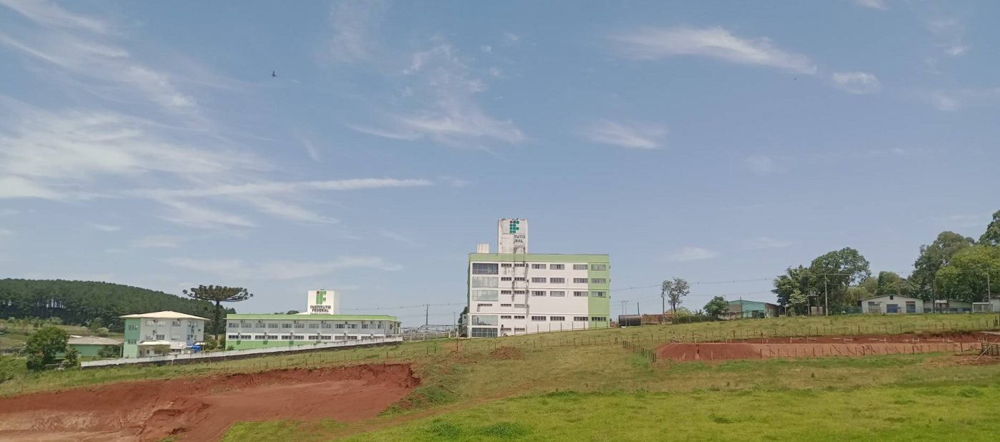
Conheça o campus
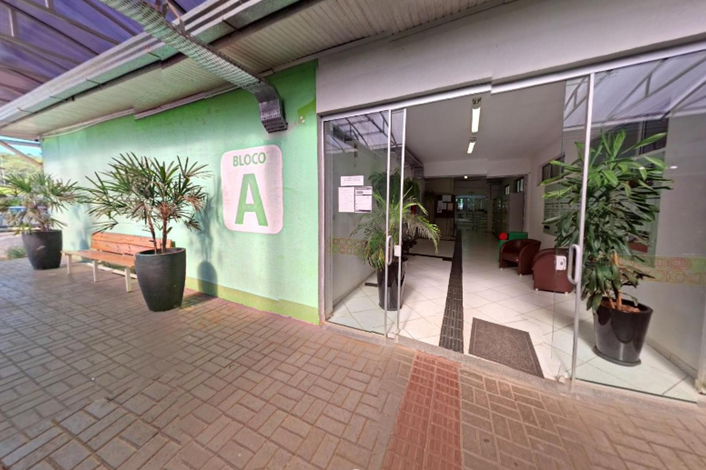
Bloco A
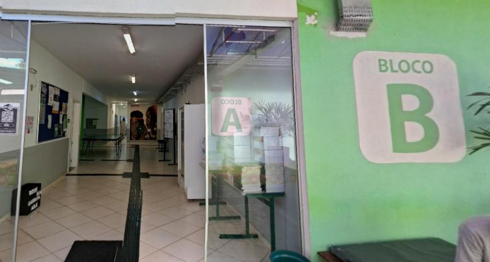
Bloco B
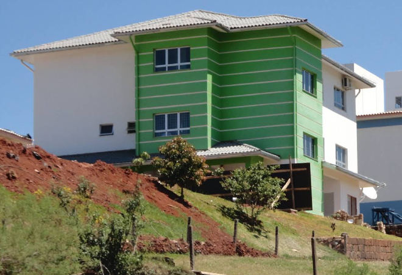
Bloco C
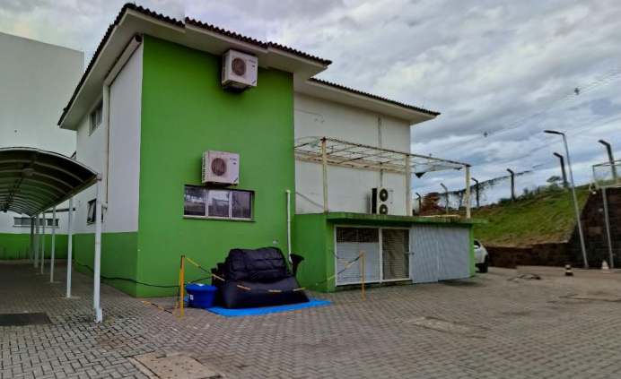
Bloco D
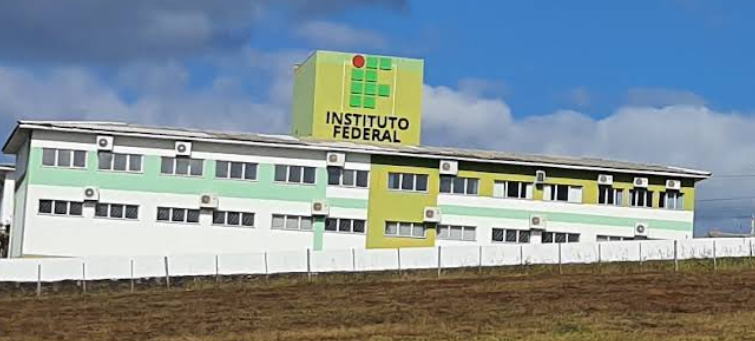
Bloco E
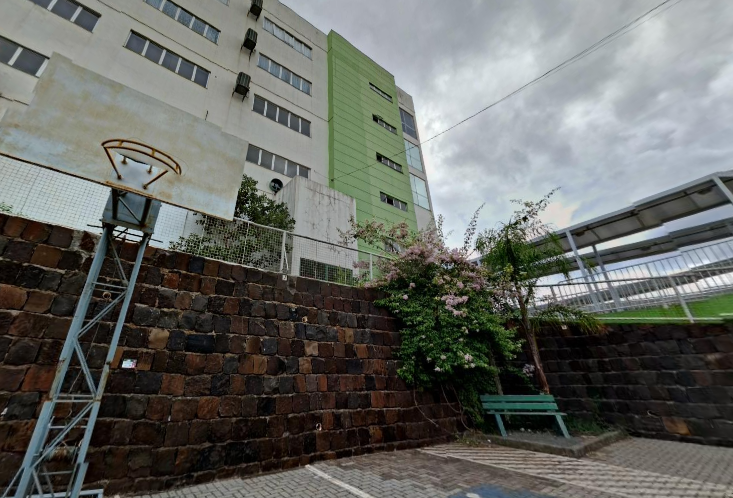
Bloco F
Abaixo você pode explorar alguns dos principais pontos do Instituto
Entrada Do campus
Entrada blocos A e B
Abaixo você pode explorar alguns dos principais pontos de acessibilidade do Instituto.
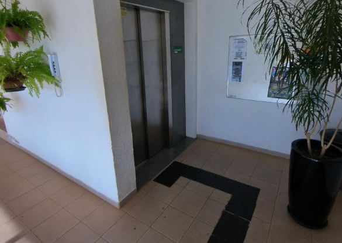
Elevador de acesso
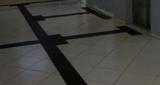
Piso tátil
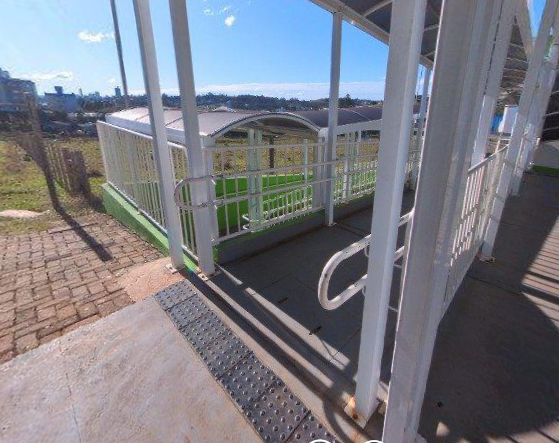
Rampa de acesso
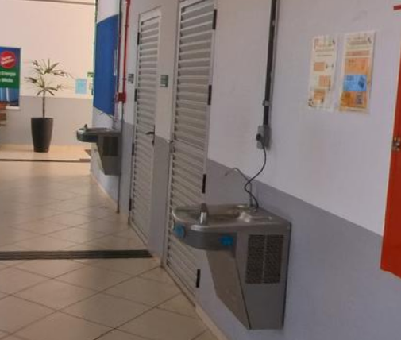
Banheiro acessível
Instituto Federal de Santa Catarina
Campus Chapecó
Endereço: Av. Nereu Ramos, 3450 D - Seminário
CEP: 89813-000 - Chapecó/SC
Telefone: (49) 3313-1240
| SEGUNDA A SEXTA-FEIRA | |
|---|---|
| Horário | Destino |
| 05:35 | Seminário |
| 06:10 | Seminário |
| 06:35 | Seminário |
| 06:50 | Seminário |
| 07:10 | Seminário |
| 07:30 | Seminário |
| 07:45 | Seminário |
| 08:05 | Seminário |
| 08:20 | Seminário |
| 09:00 | Seminário |
| 09:40 | Seminário |
| 10:20 | Seminário |
| 11:00 | Seminário |
| 11:35 | Seminário |
| 11:45 | Seminário |
| 12:10 | Seminário |
| 12:20 | Seminário |
| 12:40 | Seminário |
| 13:05 | Seminário |
| 13:15 | Seminário |
| 13:30 | Seminário |
| 13:50 | Seminário |
| 14:20 | Seminário |
| 14:50 | Seminário |
| 15:30 | Seminário |
| 16:00 | Seminário |
| 16:15 | Seminário |
| 16:30 | Seminário |
| 16:50 | Seminário |
| 17:15 | Seminário |
| 17:20 | Seminário |
| 17:35 | Seminário |
| 17:45 | Seminário |
| 18:00 | Seminário |
| 18:10 | Seminário |
| 18:25 | Seminário |
| 18:35 | Seminário |
| 18:45 | Seminário |
| 19:00 | Seminário |
| 19:30 | Seminário |
| 20:00 | Seminário |
| 20:40 | Seminário |
| 21:15 | Seminário |
| 21:45 | Seminário |
| 21:55 | Seminário |
| 22:10 | Seminário |
| 22:40 | Seminário / Progresso |
| 23:00 | Seminário / Progresso |
| 23:40 | Seminário / Progresso |
| SEGUNDA A SEXTA-FEIRA | |
|---|---|
| Horário | Destino |
| 00:35 | Hospital Regional / Vento Minuano / Seminário / Progresso (ter. a sab) |
| 01:05 | Seminário / Progresso / Vento Minuano / Hospital Regional |
| 01:40 | Seminário / Progresso / Hospital Regional |
| 03:10 | Seminário / Progresso / Hospital Regional |
| 04:50 | Progresso |
| 05:30 | Progresso |
| 05:55 | Progresso |
| 06:20 | Progresso |
| 06:45 | Progresso |
| 07:05 | Progresso |
| 07:20 | Progresso |
| 07:40 | Progresso |
| 08:00 | Progresso |
| 08:40 | Progresso |
| 09:20 | Progresso |
| 10:00 | Progresso |
| 10:40 | Progresso |
| 11:20 | Progresso |
| 11:40 | Progresso |
| 12:05 | Progresso |
| 12:35 | Progresso |
| 12:50 | Progresso |
| 13:20 | Progresso |
| 13:40 | Progresso |
| 14:20 | Progresso |
| 15:00 | Progresso |
| 15:40 | Progresso |
| 16:20 | Progresso |
| 17:00 | Progresso |
| 17:40 | Progresso |
| 18:05 | Progresso |
| 18:20 | Progresso |
| 18:50 | Progresso |
| 19:20 | Progresso |
| 20:10 | Progresso |
| 20:50 | Progresso |
| 21:30 | Progresso |
| 22:00 | Progresso |
| 22:40 | Seminário / Progresso |
| 23:00 | Seminário / Progresso |
| 23:40 | Seminário / Progresso |